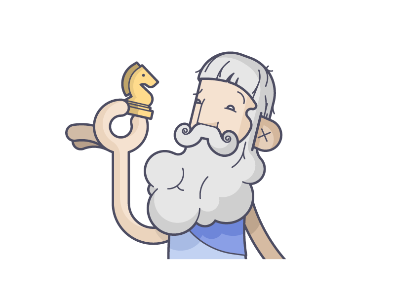

Платон
427-347 гг. до н.э.

Детство и юность
Платон рос и воспитывался в аристократической семье.
Согласно преданию, отец философа, Аристон, происходил из рода Кодра – последнего правителя Аттики. Мать Платона, Периктиона, была потомком знаменитого афинского политика и поэта Солона.
У родителей философа также родилась девочка Потона и 2 мальчика – Главкон и Адимант.
Все четверо детей Аристона и Периктионы получали общее образование. Стоит отметить, что наставником Платона был досократик Кратил, последователь учений Гераклита Эфесского.
В ходе своего обучения, Платон лучше всего усваивал литературу и изобразительное искусство. Позже, он серьезно увлекся борьбой и даже принимал участие в Олимпийских играх.
Отец Платона являлся политическим деятелем, который стремился к благополучию своей страны и ее граждан.
По этой причине Аристон хотел, чтобы его сын стал политиком. Однако Платону не очень нравилась эта идея. Вместо этого, он с большим удовольствием занимался написанием стихов и пьес.
Как-то раз, Платон повстречал зрелого мужчину, с которым у него завязался диалог. Он был настолько впечатлен рассуждением собеседника, что пришел в неописуемый восторг. Этим незнакомцем был Сократ.
Философия Платона
Идеальный мир Платона
Платон был уверен: то, что мы видим, вовсе не является реальностью. Мы можем воспринимать только низший мир, а на самом деле существует еще и высший, идеальный, и как раз он является настоящим. В идеальном мире находятся идеи, или образцы, всех вещей, существующих в мире материальном. Например, все лошади, которых можно обнаружить в нашем мире, — это лишь слепки с идеи лошади, обитающей в мире высшем.
Каким же образом идеальный слепок становится земным объектом? Идея соединяется с материей — и получается физически ощутимый объект. Но любой слепок — это лишь копия, бледное подобие. Так и весь наш физический мир — бледное подобие мира идей, яркого и настоящего.
Свою теорию Платон иллюстрировал легендой о пещере. Пещера — это земной мир, а человечество — пленники, заточенные в этой пещере. За пределами пещеры раскинулись зеленые просторы, на голубом небе сияет солнце, бродят прекрасные животные и летают птицы. Но несчастные пленники ничего этого не видят, они могут наблюдать только тени на стене пещеры и принимают эти тени за реальность.
Философ применял свою теорию об идеях не только к материальным объектам, но и к этическим принципам, таким как справедливость, добродетель, благо. Он считал, что в нашем мире можно найти лишь несовершенные копии этих понятий. В высшем мире, который Платон называл «умным местом», существует своя иерархия. На вершине всего находится идея блага, ей подчиняются другие моральные понятия, а идеи вещей и предметов расположены в самом низу этой системы.
Бог
Боги и божества в философии Платона представляли в качестве весомого дополнения к его метафизической иерархии. Боги и божества играют колоссальную роль в жизни людей. Боги существуют, поэтому, полагал Платон, что это следует из одушевлённости Вселенной, а также из "прекрасного распорядка" Вселенной и времён. Об этом уже говорит и поклонение богам у всех греков и варваров.
Благодаря богам происходит всеобщее становление к великой конечной цели, а именно к "присущему жизни целого блаженному бытию". При этом богов Платон не называет персонально, почти ничего не говорит об их "функциях". Он чаще высказывается апофатически, в духе личных переживаний живого религиозного опыта и мистического знания. А в том, что Платон знал подобный опыт, не сомневались многие.
У Платона божественное - это идеальный мир во всех своих измерениях. Идея блага божественна, но это не бог - личность. На вершине иерархии находится божественное существо, но это все безличные существа. Платона можно считать основателем западной теологии в том плане, что у него божественное - это сверхземное, нематериальное.
Бытие и познание
Согласно учению Платона, лишь мир идей представляет собой истинное бытие, а конкретные вещи — это нечто среднее между бытием и небыти¬ем, они только тени идей. Платон объявил мир идей божественным царством, в котором до рождения человека пребывает его бессмертная душа. Затем она попадает на грешную землю, где, временно находясь в человеческом теле, как узник в темнице, она вспоминает о мире идей. Бытие содержит в себе противо¬речия: оно едино и множественно, вечно и преходяще, неизмен¬но и изменчиво. В космогоническом учении Платон утверждает, что последними элементами всех вещей являются неделимые треугольники, или геометрические бестелесные атомы.
Теория познания Платона опирается на его учение о душе. Платон считал, что человек как телесное существо смертен. Душа же его бессмертна. Когда человек умирает, его душа не погибает, а лишь освобождается от телесного покрова как своей темницы и начинает свободно путешествовать в поднебесной сфере. Во время этого путешествия она соприкасается с миром идей и созерцает их. Поэтому суть процесса познания состоит в припоминании душой идей, которые она уже созерцала.
Ис¬тинное знание дает только мышление. Мышление же — это не¬зависимый от чувственных восприятий, абсолютно самостоя¬тельный процесс припоминания. Только мышление дает знание идей. Чувственное восприятие порождает лишь мнения о ве¬щах. В связи с этим процесс познания определяется Платоном как диалектика, то есть искусство вести устную речь, искусство ставить вопросы и отвечать на них, пробуждая воспоминания. Человеческая душа независима от тела и бессмертна. Душа со¬стоит из трех частей: разумной, которая создается самим твор¬цом, аффективной и вожделеющей, которые создаются низшими богами. Победа разумной части над страстями и вожделениями возможна при соответствующем воспитании.
Бессмертие и переселение душ
Душа человека, считал Платон, приближена к идеальному миру, поэтому она так же вечна и совершенна, как и все идеи. Тело же полностью находится в материальном мире, поэтому оно страдает от несовершенств и умирает. Платон верил в переселение душ. По его мнению, душа, ушедшая на небо, в высший мир, находится там десять тысяч лет, после чего снова возрождается в новом теле.
Но просто верить для философа недостаточно, он должен подтвердить свою теорию логическими доказательствами. И Платон это делает: во многих своих сочинениях он приводит развернутые аргументы в пользу бессмертия души.
Первое доказательство, самое главное, он называл циклическим. В чем же оно заключается? Мир состоит из противоположностей, и наличие одной противоположности подразумевает существование второй. Раз есть сон, то есть и бодрствование, раз есть смерть, то есть и бессмертие. «Если бы все, причастное жизни, умирало, а умерев, оставалось бы мертвым и вновь не оживало, — разве не совершенно ясно, что в конце концов все стало бы мертво и жизнь бы исчезла?» — говорит Платон.
Второе доказательство — «припоминание». Платон был уверен, что все важнейшие абстрактные понятия, такие как красота, добро и т. п., изначально есть в сознании человека, о них помнит бессмертная душа. Мы их не узнаем заново, а просто «припоминаем». Третье доказательство связано с двумя видами сущностей. Тело относится к видимым смертным субстанциям, душа — к невидимым вечным.
Теория познания Платона
Платон продолжает начатые его предшественниками размышления о природе знания и разрабатывает собственную теорию познания. Он определяет место философии в познании, которая находится между полным знанием и незнанием. По его мнению, философия как любовь к мудрости невозможна ни для того, кто уже обладает истинным знанием (боги), ни для того, кто ничего не знает. Согласно Платону, философ — тот, кто стремится восходить от менее совершенного знания к более совершенному.
При разработке вопроса о знании и его видах Платон исходит из того, что виды знания должны соответствовать видам, или сферам, бытия. В диалоге «Государство» он разделяет знание на чувственное и интеллектуальное, каждое из которых, в свою очередь, делится на два вида. Чувственное знание состоит из «веры» и «подобия». Посредством «веры» мы воспринимаем вещи в качестве существующих, а «подобие» — это некоторое представление вещей, мыслительное построение, основывающееся на «вере». Знание такого рода не является истинным, и Платон называет его мнением, которое не есть ни знание, ни незнание и находится между ними обоими.
Интеллектуальное знание доступно лишь тому, кто любит созерцать истину, и делится на мышление и рассудок. Под мышлением Платон понимает деятельность ума, непосредственно созерцающую интеллектуальные предметы. В сфере рассудка познающий тоже пользуется умом, но для того, чтобы понимать чувственные вещи как образы. Интеллектуальный вид знания — это познавательная деятельность людей, которые рассудком созерцают сущее. Таким образом, чувственные вещи постигаются посредством мнения, и по отношению к ним знание невозможно. Посредством знания постигаются лишь идеи, и только в отношении них возможно знание.
В диалоге «Менон» Платон развивает учение о припоминании, отвечая на вопрос о том, каким образом мы знаем то, что знаем, или как познавать то, чего не знаем, ибо мы должны иметь предварительное знание о том, что собираемся познавать.
Диалог между Сократом и необразованным рабом приводит к тому, что Сократ, задавая ему наводящие вопросы, открывает в рабе способность отвлечься от мира явлений и возвысится до абстрактных математических «идей». Это означает, что душа познает всегда, так как она бессмертна, а, соприкоснувшись с чувственным миром, начинает припоминать уже известные ей сущности вещей.
Диалектика Платона
В своих трудах Платон диалектику называет наукой о сущем. Развивая диалектические идеи Сократа, он понимает диалектику как соединение противоположностей, и превращает её в универсальный философский метод.
В деятельности активной мысли, лишенной чувственного восприятия, Платон выделяет «восходящий» и «нисходящий» пути.
«Восхождение» заключается в том, чтобы двигаться вверх от идеи к идее, вплоть до самой высшей, отыскивая единое во многом. В диалоге «Федр» он рассматривает это как обобщающую «...способность, охватывая все общим взглядом, возводить кединой идее то, что повсюду разрозненно...». Коснувшись этого единого начала, ум начинает двигаться «нисходящим» путем.
Он представляет собой способность все разделять на виды, идя от более общих к частным идеям. Платон пишет: «...это, наоборот, способность разделять все на виды, на естественные составные части, стараясь при этом не раздробить ни одной из них, как это бывает у дурных поваров...». Эти процессы Платон и называет «диалектикой», а философ, по определению, есть «диалектик».
Платоновская диалектика охватывает различные сферы: бытия и небытия, тождественного и иного, покоя и движения, единого и многого. В своем диалоге «Парменид» Платон выступает против дуализма идеи и вещи и доказывает, что если идеи вещей отделены от самих вещей, то вещь, не содержащая в себе никакой идеи самой себя, не может содержать никаких признаков и свойств, то есть перестанет быть самой собой. Кроме того, он рассматривает принцип идеи как какое бы то ни было одно, а не только как сверхчувственное единое, а принцип материи как какое бы то ни было иное в сравнении с одним, а не только как материальный чувственный мир. Таким образом, диалектика одного и иного оформляется у Платона в предельно обобщенную диалектику идеи и материи.
Гносеология Платона
Идеалистическая гносеология Платона вытекает из его объективно - идеалистической онтологии из его идеалистической психологии. Сотворённые богами души, находясь на небе, питаются созерцанием за небесной области - идеального мира. Упав на землю и вселившись в тела, души забывают об идеальном мире. Отныне их питает не сверхчувственное умозрение, а чувственное восприятие, и питает оно не высшую, а низшую часть души, отчего душа все более тяжелеет.
Платон отрицает происхождение понятий из ощущений, из опыта, он не согласен с теми, кто думает, что понятия возникают из данных чувств путём обобщения этих данных. Считают, например, что к идее равного приходят, наблюдая разные предметы. Но, возражает Платон, в природе ничего равного нет. Все равное там лишь мнится, кажется таковым. Учение Платона о познании неотделимо от его учения о бытии, от его психологии, космологии и мифологии. Учение о познании оборачивается мифом. По мнению Платона, душа наша бессмертна. До того, как она вселилась на землю и приняла телесную оболочку, душа будто бы, созерцала истинно сущее бытие и сохраняла знание о нём. Человек будет знать, не учась ни у кого, а только отвечая на вопросы, т.е. почерпнёт знание в самом себе, следовательно, вспомнит. Поэтому, суть процесса познания, по Платону, состоит в припоминании душой тех идей, которые она уже когда-то созерцала.
Суть теории познания Платона состоит в тезисе, что "знание - это припоминание (анамнезис)" того, что душа некогда узнала, а затем позабыла.
Все науки оцениваются Платоном лишь с одной точки зрения - насколько они способны отвращать нас от чувственного мира возносить к идеальному, служить анамнезису (припоминанию) идей. Платон третирует эмпирическую астрономию, физику, потому что, как он утверждает, для того, что возникает и гибнет, для того, что меняется, вообще для единичных вещей не существует познания. Он насмехается над теми, кто ждёт от наук практической пользы для людей.
Подводя итог, можно различить у Платона следующие виды знания:
- Знание совершенно достоверное без примеси лжи и заблуждения - знание идей, получаемое до вселения душ в тела непосредственным умозрением идей, а после вселения в тела - путём диалектического припоминания;
- Близкое к достоверному знание чисел и основанных на них наук, служащих пропедевтикой к диалектике и знанию идей;
- Знание мнимое, смесь истины и заблуждения, эмпирическое и физическое "знание" вещей чувственного мира, опирающиеся на чувственное восприятие, в котором нет истины. К этому виду знания примыкает воображение, благодаря которому человек не столько воспринимает естественные вещи, сколько творит искусственные, занимаясь ремёслами и искусствами.
Учение о государстве
Земной мир полон зла, потому что он далек от идеалов. Как же изменить такое положение вещей? Платон предлагал использовать политические средства, которые описал в трактате «Государство».
Философ считал, что душа состоит из трех частей: разумной, яростной и страстной. В разных людях преобладают разные части души, и это нужно учитывать, создавая государство. Основа благополучия, по Платону, в разделении труда. Если каждый член общества будет заниматься тем делом, к которому у него имеется предрасположенность, то наступит гармония и порядок.
Люди разделяются на три класса, в зависимости от того, какое начало преобладает в их душе. Те, кто находится во власти низших потребностей (люди рабочих профессий, производители), должны подчиняться людям с преобладанием яростного начала (воинам, защитникам), как более мужественным и сильным. Ну а во главе стоят те, в ком преобладает разумное начало (философы, правители). Неравенство сословий, считал Платон, совершенно естественно, так как люди неодинаково одарены природой.
Платон был уверен, что частная собственность — зло. Все имущество должно быть общим, дети должны воспитываться коллективно. Самым справедливым государственным устройством Платон считал аристократическую республику, где правят лучшие, самые достойные граждане.
Личная жизнь
Платон пропагандировал отказ от частной собственности. Также, он проповедовал общность жен, мужей и детей.
Вследствие этого, все женщины и дети становились общими. Поэтому нельзя выделить одну жену у Платона, как и нельзя точно определить его биологических детей.
Смерть
В последние дни жизни Платон трудился над новой книгой «О благе как таковом», которая так и осталась недописанной.
Философ умер естественным образом, прожив долгую и насыщенную жизнь. Платон скончался в 348 (или 347) году до н.э., прожив около 80 лет.
Основные труды
Чтобы понять творчество Платона, необходимо знать, что философия Платона изменялась с течением времени и ее нельзя рассматривать как полную и совершенно законченную систему произведений, планомерно подчиненных дидактической цели. Напротив, его труды — это этапы внутреннего путешествия философа.
Философскую деятельность Платона можно разделить на три периода, которые с хронологической точки зрения можно классифицировать как ученичество, путешествия и преподавание. Если говорить о внешнем влиянии, то эти три этапа следует определить таким образом: сократовский период, период влияния Гераклита и элейской школы и, наконец, пифагорейский период.
Труды Платона можно разделить на четыре группы.
Первая состоит из полутора десятков диалогов, предшествующих большим произведениям, где Платон излагает теорию Идеи; самые значительные из них — «Апология Сократа», «Протагор», «Горгий», «Менон» и «Кратил».
Вторая группа включает в себя произведения, где теория Идеи изложена в ее первоначальной форме: «Пир», «Федон», «Государство» и «Федр».
Третья группа — это труды, которые можно было бы назвать «критическими», где Платон пересматривает свою доктрину, показывая, что необходимо внести в нее некоторые изменения: это «Теэтет», «Парменид», «Софист» и «Политик».
Наконец, в четвертую группу входят труды, излагающие доктрину в ее последней форме: «Филеб», «Тимей» (с незаконченным «Критием»), «Законы» и письма. Сейчас признается подлинность, по крайней мере, некоторых из писем, приписываемых Платону, в частности семи или восьми наиболее значительных.